XAML, at run time or compiled
Markup is loaded at run time, or compiled to Rust source by the build script of a crate, with the framework's markup extensions.
FerroUI is a UI framework for Rust with XAML, a WinUI 3 theme and native platform backends for macOS, Windows, Linux (X11, Wayland and the framebuffer), iOS, Android and the browser: a retained-mode control library with styled properties, data binding, control themes and a composition renderer.
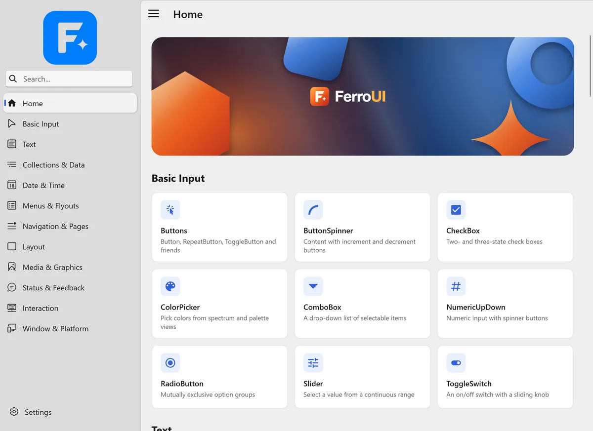
[dependencies]
ferroui-base = "={{version}}"
ferroui-controls = "={{version}}"
ferroui-desktop = "={{version}}"
ferroui-themes-fluent = "={{version}}"Controls, styling, binding, layout and rendering in Rust, released together as one set of crates at one version.
Markup is loaded at run time, or compiled to Rust source by the build script of a crate, with the framework's markup extensions.
User interfaces without XAML: builders for every control, the rsx! macro, signals, and components with hooks and a reconciler.
WinUI 3, Fluent, Simple, macOS 26 and Android Material 3 Expressive, each for the whole control set.
Native WinUI controls such as NavigationView, InfoBar and NumberBox; acrylic and Mica materials, Reveal, theme shadows and connected animations.
RichTextBlock and RichEditBox with a text object model, RTF and the rich clipboard, and an input method connection on every platform.
Hierarchical and tabular data in one virtualizing view, with sorting, selection, editing and drag and drop.
Cartesian and pie charts with LiveCharts2's measurement, paint and motion, in compiled XAML with live data; simple charts beside them.
Rust ports of System.Reactive, DynamicData, Splat and ReactiveUI, with view models that are tested without a window.
Experimental: the literals of rsx!, XAML reloaded at run time with supported live components kept, and explicit Rust functions patched during development.
F12 opens the trees, the properties and where their values come from, styles, layout and routed events; an MCP server and a Chrome DevTools endpoint are opt-in.
Skia renders through Graphite on Metal, Ganesh on OpenGL, ANGLE, WebGL and Vulkan, or in software; HarfBuzz shapes text. A Vello backend is experimental.
Triggers and actions in markup: about 330 custom behaviors, input events, drag and drop, responsive classes and animations.
The browser builds below are the same Rust applications as on the desktop, compiled to WebAssembly and drawn into a canvas.
Live demos, each in a repository of its own except the catalog.
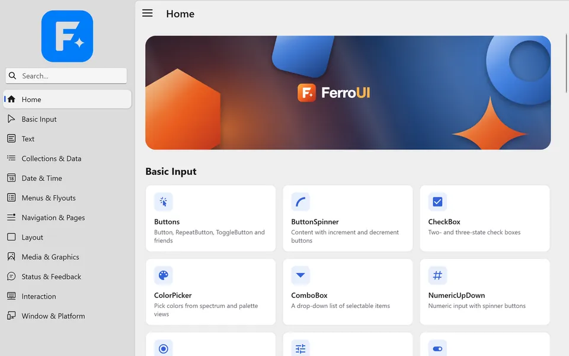
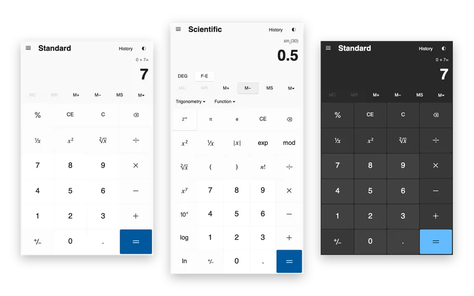
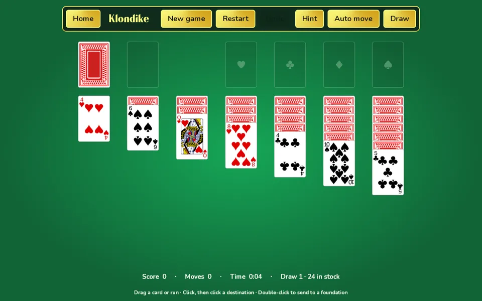
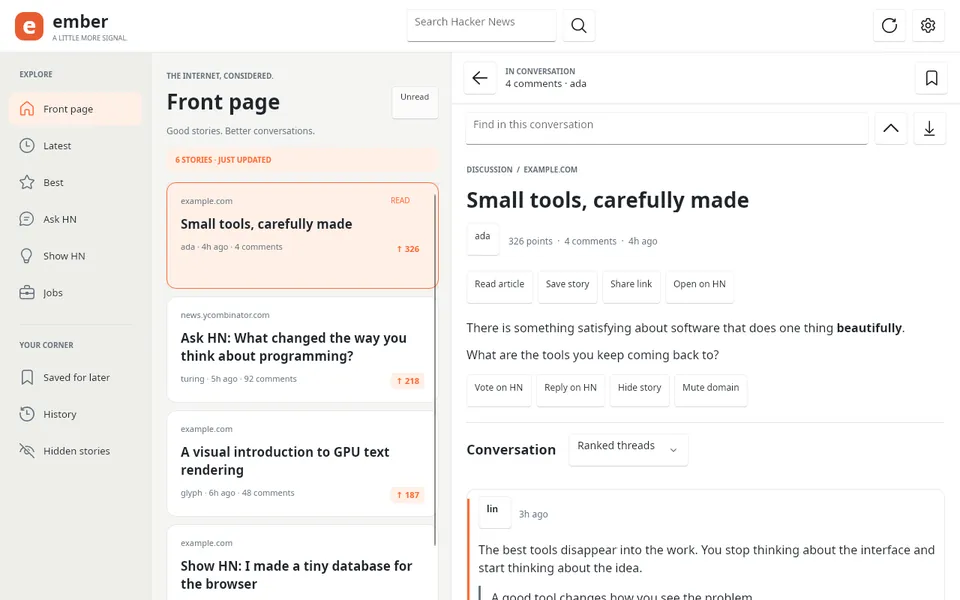
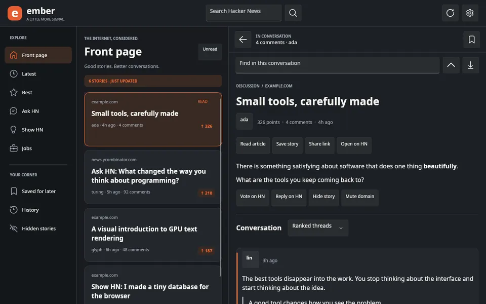
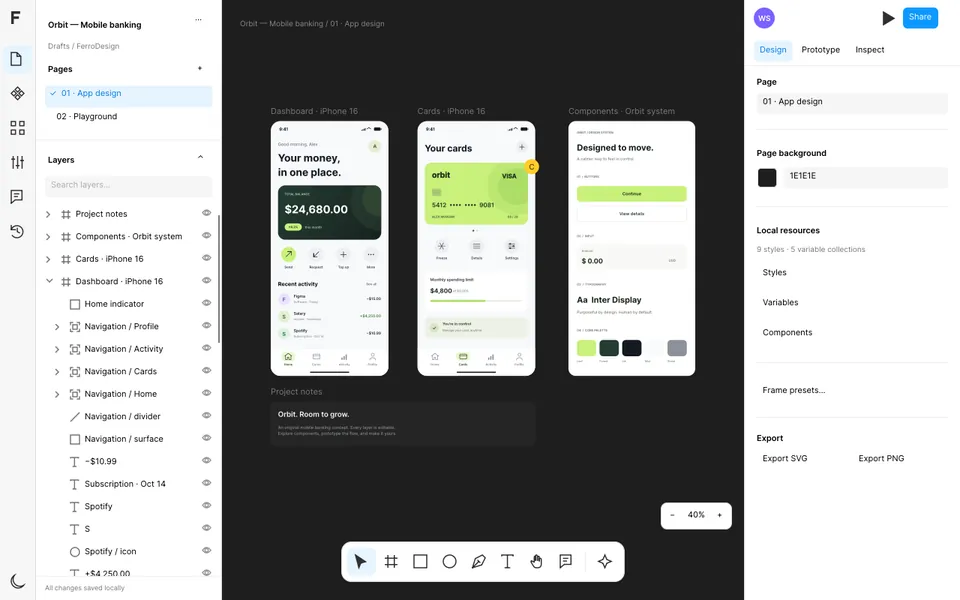
Run them from a clone of FerroUI with the command on each card.
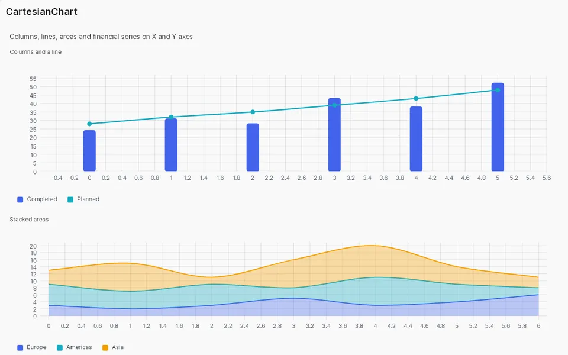
Six charts in one compiled XAML view with live data: columns with a line, a doughnut, stacked areas, scatter, candlesticks and a gauge.
Pictured: the CartesianChart page of the Control Catalog, on the same chart controls.
The pinned WinUI Gallery catalog, 126 pages and 350 sample definitions with their original XAML, and native examples for a subset of the pages.
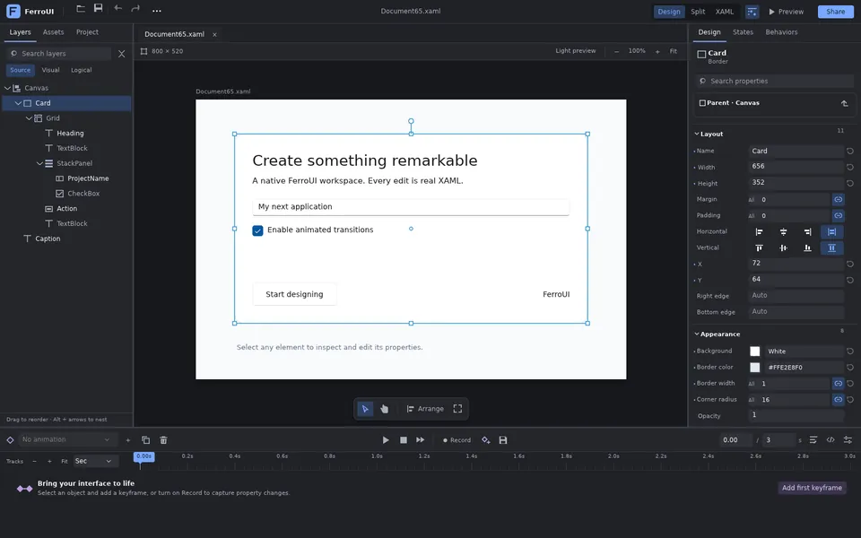
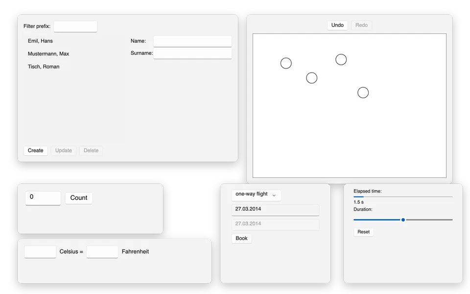
The seven tasks of the 7GUIs benchmark, each in three styles of the declarative API: builders, rsx! and components with hooks.
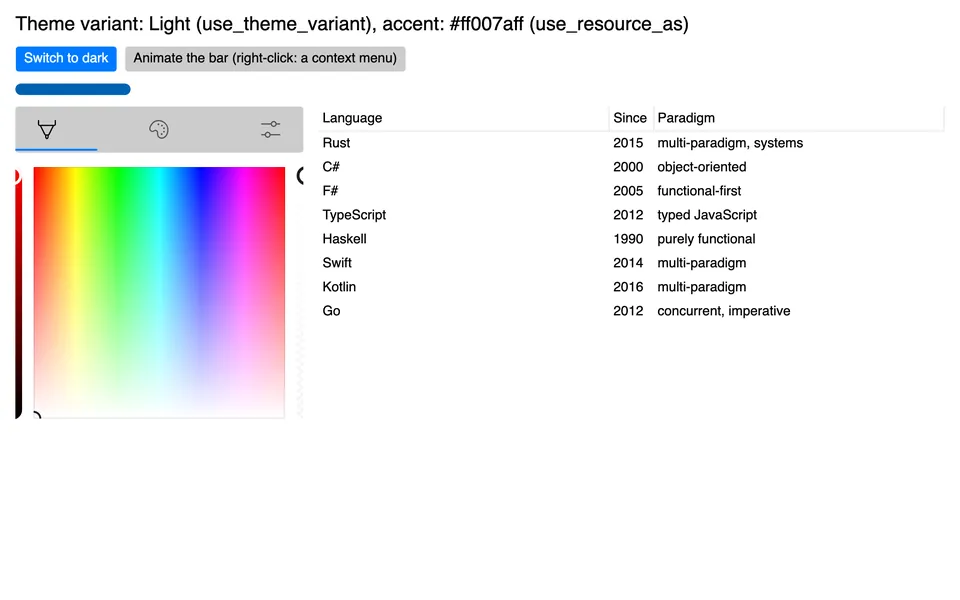
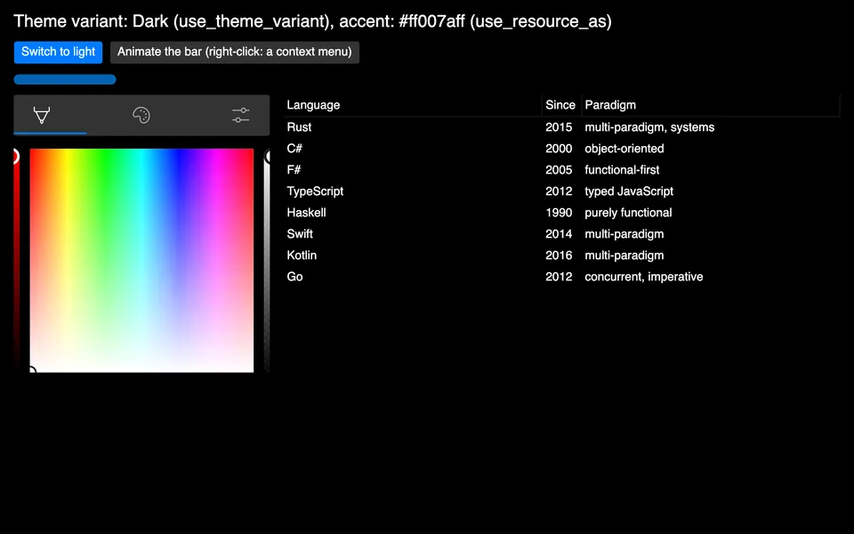
The declarative API with styles, the theme variant and resources, transitions, a context menu, the colour picker and the TreeDataGrid.
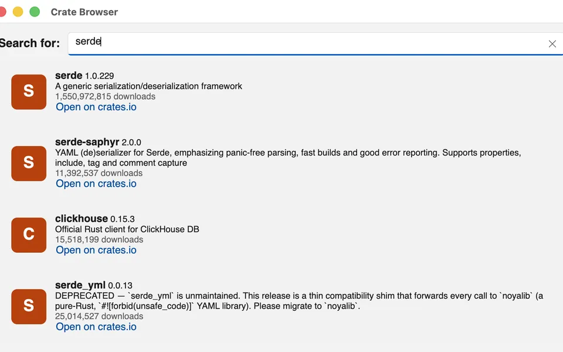
The getting-started sample of ReactiveUI: a crates.io browser on the WinUI 3 theme, with a view model, commands and bindings.
cargo new to a windowFerroUI is a set of crates released together at one version. Name the same version for every FerroUI crate.
| Platform | Needs |
|---|---|
| macOS | macOS 11 or later and the Xcode command line tools (the platform compiles an Objective-C++ library). |
| Windows | x64 or ARM64, the MSVC build tools; libclang for ANGLE (the default feature angle); the feature vulkan builds Skia from source. Hosting in WinUI 3 needs the Windows App SDK 1.6 runtime and its bootstrap library beside the executable. |
| Linux | The development packages of fontconfig and FreeType. The system libraries (Xlib, GTK, GLib, EGL, Vulkan, Wayland, xkbcommon, libinput, libdrm, libgbm) are opened at run time; none is linked. |
| iOS | Xcode with the iOS SDK and the targets aarch64-apple-ios and aarch64-apple-ios-sim; an application is bundled without an Xcode project (scripts/ios/bundle.sh). |
| Android | The Android SDK and NDK, stable Rust with the target aarch64-linux-android, API level 26 or later; packaged without Gradle (scripts/android/apk.sh). |
| Browser | The target wasm32-unknown-emscripten, Emscripten and the pinned wasm-bindgen command-line tool (scripts/browser/setup.sh installs them). |
A desktop application names the base library, the controls, the desktop entry point and a theme:
[dependencies]
ferroui-base = "={{version}}"
ferroui-controls = "={{version}}"
ferroui-desktop = "={{version}}"
ferroui-themes-fluent = "={{version}}" is being released. Until it is on crates.io, use . The crates marked New in in the crate table arrive with the release.
The WinUI 3 theme is ferroui-themes-winui (WinUITheme), in place of the Fluent theme or beside it.
One dependency can stand for all of them: the facade crate ferroui, with a prelude and features for the platforms, the themes and the backends.
The declarative API is ferroui-view, MVVM is ferroui-reactiveui-controls and the developer tools are ferroui-diagnostics.
Hello, World! in the WinUI 3 theme, in three of the ways FerroUI offers.
A component with a button that counts its clicks; the count is a signal that the text of the button follows. From samples/HelloWorld.Macros.
[dependencies]
ferroui-base = "={{version}}"
ferroui-view = { version = "={{version}}", features = ["desktop"] }
ferroui-themes-winui = "={{version}}"cargo new hello-ferroui
cd hello-ferroui
cargo runuse ferroui_base::layout::{HorizontalAlignment, VerticalAlignment};
use ferroui_view::prelude::*;
/// The content of the window.
#[component]
fn Hello() -> Element {
let clicks = signal(0);
rsx! {
StackPanel { horizontal_alignment: HorizontalAlignment::Center, vertical_alignment: VerticalAlignment::Center, spacing: 12.0,
TextBlock { text: "Hello, World!", font_size: 28.0 }
Button { name: "Count", horizontal_alignment: HorizontalAlignment::Center, on_click: move |_| clicks.update(|c| *c += 1),
TextBlock { text: move || clicked_text(clicks.get()) }
}
}
}
}
/// The text of the button after `clicks` clicks.
fn clicked_text(clicks: i32) -> String {
match clicks {
1 => "Clicked 1 time".to_string(),
_ => format!("Clicked {clicks} times"),
}
}
fn main() {
launch_themed(
|| ferroui_themes_winui::WinUITheme::new().as_style(),
|| window().title("Hello, World!").width(400.0).height(240.0).child(Hello()).into(),
|_| {},
);
}The application declares the theme, the window its content; the build script compiles both to Rust with ferroui-build. The complete crate is samples/HelloWorld (cargo run -p hello-world in a clone).
<Application xmlns="https://github.com/ferroui"
xmlns:x="http://schemas.microsoft.com/winfx/2006/xaml"
x:Class="HelloWorld.App">
<Application.Styles>
<WinUITheme />
</Application.Styles>
</Application><Window xmlns="https://github.com/ferroui"
xmlns:x="http://schemas.microsoft.com/winfx/2006/xaml"
x:Class="HelloWorld.MainWindow"
Title="Hello, World!"
Width="400" Height="240">
<TextBlock Text="Hello, World!"
FontSize="28"
HorizontalAlignment="Center"
VerticalAlignment="Center" />
</Window><Window xmlns="https://github.com/ferroui"
xmlns:x="http://schemas.microsoft.com/winfx/2006/xaml"
Title="Hello">
<StackPanel Margin="16" Spacing="8">
<TextBlock Text="{Binding Greeting}" />
<Button Content="Click" Command="{Binding ClickCommand}" />
</StackPanel>
</Window>An application class that creates its window when the framework has finished initialising, with everything from the prelude of the facade crate (here with the Fluent theme). The complete program is hello.rs.
[dependencies]
ferroui = "={{version}}"use ferroui::prelude::*;
use std::rc::Rc;
#[repr(C)]
pub struct App {
base: Application,
}
ferro_class!(App: Application);
ferro_impl_classes!(App: FerroObjectImpl);
impl NewApplication for App {
fn new_application() -> Ref<Self> {
instantiate(Self { base: Application::construct() })
}
}
impl ApplicationImpl for App {
fn initialize(this: &Self) {
Self::parent_initialize(this);
this.styles().add(FluentTheme::new().as_style());
}
fn on_framework_initialization_completed(this: &Self) {
let lifetime = this.application_lifetime();
if let Some(desktop) =
lifetime.as_ref().and_then(|lifetime| lifetime.as_classic_desktop_style_application_lifetime())
{
desktop.set_main_window(Some(create_main_window()));
}
Self::parent_on_framework_initialization_completed(this);
}
}
fn create_main_window() -> Ref<Window> {
let text = TextBlock::new();
text.set_text(Some("Hello from FerroUI"));
text.set_font_size(24.0);
let button = Button::new();
button.set_content(Some(Rc::new("Click me".to_string())));
button.click(|_, _| println!("Button clicked"));
let panel = StackPanel::new();
panel.set_spacing(12.0);
panel.children().add(text);
panel.children().add(button);
let window = Window::new();
window.set_title(Some("Hello".to_string()));
window.set_content(Some(Control::boxed(panel)));
window
}
fn main() -> std::process::ExitCode {
let args: Vec<String> = std::env::args().skip(1).collect();
let exit_code = AppBuilder::configure::<App>()
.use_platform_detect()
.start_with_classic_desktop_lifetime(&args);
std::process::ExitCode::from(exit_code as u8)
}Clone FerroUI to run the samples, the examples and the tests.
git clone https://github.com/wieslawsoltes/FerroUI.git
cd FerroUI
# Hello, World! in XAML, and with builders, rsx! and hooks
cargo run -p hello-world
cargo run -p hello-world-builders
cargo run -p hello-world-macros
cargo run -p hello-world-hooks
# The ControlCatalog sample application
cargo run -p control-catalog-desktop
# The gallery of the WinUI theme
cargo run -p winui-theme-gallery --bin winui-theme-gallery
# The tests of the workspace
cargo test --workspaceSolitaire, Ember, FerroDesign and Calculator are set up this way: FerroUI as a git submodule, its workspace dependencies and profiles copied into the application's workspace, and FerroUI's reusable workflow for CI and GitHub Pages. The guide is docs/apps.md.
MyApp/
FerroUI/ the submodule
.cargo/config.toml includes FerroUI/.cargo/config.toml
.github/workflows/ci.yml calls FerroUI's app.yml
Cargo.toml the workspace, with the FerroUI blocks
Cargo.lock committed (CI builds with --locked)
src/... or MyApp/... the crates of the application
MyApp.Browser/ the browser host, with wwwroot/
README.md, LICENSE, NOTICE.mdgit submodule add https://github.com/wieslawsoltes/FerroUI.git FerroUI
# Write the FerroUI blocks of Cargo.toml (CI runs it with --check)
python3 FerroUI/scripts/apps/sync-workspace.py
# Start from the lock file the framework is tested with
cp FerroUI/Cargo.lock Cargo.lock
cargo metadata --format-version 1 > /dev/null
# Publish the browser build with GitHub Pages
gh api -X POST repos/FerroUI/MyApp/pages -f build_type=workflowname: CI
on:
push:
branches: [main]
pull_request:
workflow_dispatch:
permissions:
contents: read
pages: write
id-token: write
concurrency:
group: ci-${{ github.ref }}
cancel-in-progress: ${{ github.ref != 'refs/heads/main' }}
jobs:
app:
uses: wieslawsoltes/FerroUI/.github/workflows/app.yml@main
with:
test: |
-p my-app
check: |
-p my-app-desktop
browser-package: my-app-browserThe workflow checks the conventions, builds and tests under an X server, builds and smoke-tests the browser site, optionally packages Android and iOS, and deploys the site to GitHub Pages from main.
Every crate is released at the same version and depends on the others at exactly that version. Search by name or purpose, or narrow the list to a group.
| Crate | Description | Group | Links |
|---|---|---|---|
| ferroui-protranslate-core New in | Framework-independent translation, culture and globalization services for FerroUI | Core | crates.iodocs.rsWith the release |
| ferroui-protranslate-formats New in | Loss-aware localization catalog import and export for ProTranslate | Core | crates.iodocs.rsWith the release |
| ferroui-system New in | The parts of the .NET base class library that FerroUI and its reusable libraries share: thread-local variables for every target, events, property and collection change notification, cancellation | Core | crates.iodocs.rsWith the release |
| ferroui-base New in | The base library of FerroUI: the property system, layout, input, styling, media, text, animation, data binding and the compositor | Core | crates.iodocs.rsWith the release |
| ferroui-reactive New in | A port of Rx.NET (System.Reactive) for FerroUI: observable sequences, their operators, schedulers, disposables and subjects, independent of the user interface | Core | crates.iodocs.rsWith the release |
| ferroui-dynamic-data New in | A port of DynamicData for FerroUI: reactive collections, change sets, observable caches and lists with their operators, independent of the user interface | Core | crates.iodocs.rsWith the release |
| ferroui-reactive-testing New in | A port of Microsoft.Reactive.Testing for ferroui-reactive: the virtual-time test scheduler, recorded notifications, hot and cold test observables and their assertions | Core | crates.iodocs.rsWith the release |
| ferroui-splat New in | A port of Splat for FerroUI: the service locator with its dependency resolvers, logging, mode detection, feature usage tracking and the application builder, independent of the user interface | Core | crates.iodocs.rsWith the release |
| ferroui-dependency-injection New in | Microsoft.Extensions.DependencyInjection for Rust: thread-local services, scopes, keyed resolution and constructor factories, independent of the user interface | Core | crates.iodocs.rsWith the release |
| ferroui-reactiveui New in | A port of ReactiveUI for FerroUI, in its System.Reactive flavour with the run time of ReactiveUI.Binding: reactive objects, commands, property observation, bindings, view location, activation and routing for MVVM, independent of the user interface | Core | crates.iodocs.rsWith the release |
| ferroui-reactiveui-testing New in | A port of ReactiveUI.Testing for ferroui-reactiveui: running code with test schedulers, the builders of test data and the helpers of tests of view models | Core | crates.iodocs.rsWith the release |
| ferroui New in | FerroUI in one dependency: the facade crate that re-exports the common crates under short names, with a prelude and features that choose the platform, the theme and the backends | Core | crates.iodocs.rsWith the release |
| ferroui-static-view-locator-macros New in | The attributes #[static_view_locator] and #[static_view_mapping] of ferroui-static-view-locator | Controls and themes | crates.iodocs.rsWith the release |
| ferroui-controls New in | The controls of FerroUI: the application model, top levels, the control set and automation peers | Controls and themes | crates.iodocs.rsWith the release |
| ferroui-fonts-inter New in | The Inter font family as an embedded font collection of FerroUI | Controls and themes | crates.iodocs.rsWith the release |
| ferroui-livecharts New in | LiveCharts2 chart calculation, geometry, interaction and animation for FerroUI | Controls and themes | crates.iodocs.rsWith the release |
| ferroui-reactiveui-controls New in | The integration of ReactiveUI with FerroUI: the scheduler of the dispatcher, property observation and command binding for FerroUI objects, activation, the reactive views and view hosts, the data-template hook, suspension and use_reactive_ui on the application builder | Controls and themes | crates.iodocs.rsWith the release |
| ferroui-static-view-locator New in | View locators generated at build time for FerroUI: view models mapped to views by naming convention, contracts and explicit mappings, without reflection | Controls and themes | crates.iodocs.rsWith the release |
| ferroui-treedatagrid-core New in | The framework-neutral part of FerroUI's TreeDataGrid: flat and hierarchical sources, columns, rows, sorting, expansion, and row and cell selection | Controls and themes | crates.iodocs.rsWith the release |
| ferroui-view-macros New in | The rsx! and #[component] macros of ferroui-view, the declarative Rust API of FerroUI | Controls and themes | crates.iodocs.rsWith the release |
| ferroui-xaml-behaviors-animations New in | Reusable animations of the FerroUI behaviors: key-frame animation factories and runners, composition animation catalogs (entrance, exit, attention and motion presets), fade, scale, rotate, slide, tilt, orbit and parallax effects, the selection indicator animation and transition helpers | Controls and themes | crates.iodocs.rsWith the release |
| ferroui-controls-charts New in | Native FerroUI charts: line, area and bar series, category and calendar axes, legends, markers and labels | Controls and themes | crates.iodocs.rsWith the release |
| ferroui-controls-livecharts New in | Native FerroUI chart controls using the LiveCharts2 Rust chart engines | Controls and themes | crates.iodocs.rsWith the release |
| ferroui-controls-repeater New in | The ItemsRepeater of FerroUI, a port of the Repeater of WinUI: virtualizing stack, uniform grid, flow and lined-flow layouts, element factories, recycling, phasing, transitions and selection | Controls and themes | crates.iodocs.rsWith the release |
| ferroui-dialogs New in | The managed dialogs of FerroUI: the managed file chooser, the managed storage provider and the about dialog | Controls and themes | crates.iodocs.rsWith the release |
| ferroui-protranslate New in | Native FerroUI bindings, attached properties and XAML extensions for ProTranslate localization | Controls and themes | crates.iodocs.rsWith the release |
| ferroui-themes-fluent New in | The FerroUI Fluent theme: control themes, colour palettes and resources for the control set, in light and dark variants | Controls and themes | crates.iodocs.rsWith the release |
| ferroui-controls-treedatagrid New in | The TreeDataGrid control of FerroUI: hierarchical and tabular data in one virtualizing view, with sorting, selection, editing, drag and drop and its control themes | Controls and themes | crates.iodocs.rsWith the release |
| ferroui-themes-macos New in | The FerroUI macOS 26 theme: compiled control templates, semantic materials and accessible motion | Controls and themes | crates.iodocs.rsWith the release |
| ferroui-themes-material New in | Android Material 3 Expressive theme for FerroUI with compiled XAML, light and dark color schemes, expressive motion and touch-first control templates | Controls and themes | crates.iodocs.rsWith the release |
| ferroui-themes-simple New in | The FerroUI Simple theme: control themes and resources for the control set, in light and dark variants | Controls and themes | crates.iodocs.rsWith the release |
| ferroui-controls-color-picker New in | The colour picker library of FerroUI: ColorPicker, ColorView, ColorSpectrum, ColorSlider, ColorPreviewer, the colour palettes and their control themes | Controls and themes | crates.iodocs.rsWith the release |
| ferroui-devtools New in | Opt-in Chrome DevTools Protocol target for FerroUI applications | Controls and themes | crates.iodocs.rsWith the release |
| ferroui-themes-winui New in | The FerroUI WinUI theme: the control styles, templates and theme resources of WinUI 3, in light, dark and high contrast variants | Controls and themes | crates.iodocs.rsWith the release |
| ferroui-diagnostics New in | The developer tools of FerroUI: the logical and visual trees, the properties and their value sources, routed events, the layout explorer and screenshots of a running application | Controls and themes | crates.iodocs.rsWith the release |
| ferroui-controls-inking New in | The inking controls of FerroUI, a port of WinUI's: InkCanvas, the InkPresenter services, stencils, custom drying, InkToolbar with its WinUI theme, the portable ink format and the clipboard, and the ink services of Windows | Controls and themes | crates.iodocs.rsWith the release |
| ferroui-view New in | A declarative Rust API for FerroUI user interfaces without XAML: element builders generated for every control, an rsx! macro, signals that properties follow, components that run again with hooks and a reconciler | Controls and themes | crates.iodocs.rsWith the release |
| ferroui-xaml-interactivity New in | The behaviors object model of FerroUI: attached behavior collections, behaviors, triggers and actions on objects and styled elements, their lifecycle, and the templates that let styles set them | Controls and themes | crates.iodocs.rsWith the release |
| ferroui-xaml-interactions New in | The classic triggers and actions of the FerroUI behaviors: event, data and timer triggers, property, method and command actions, clipboard actions and storage pickers | Controls and themes | crates.iodocs.rsWith the release |
| ferroui-xaml-interactions-custom New in | The custom behaviors, triggers and actions of FerroUI: about 330 behaviors for specific controls, input, focus, validation, commands, windows, dialogs and services | Controls and themes | crates.iodocs.rsWith the release |
| ferroui-xaml-interactions-draganddrop New in | Drag and drop behaviors of FerroUI: dragging context data, typed data, panels and files between controls and with the system, drop targets with handlers and commands, file and text drops, tree view drop handling, and an in-process managed drag with a preview window | Controls and themes | crates.iodocs.rsWith the release |
| ferroui-xaml-interactions-draggable New in | Draggable behaviors of FerroUI: moving elements in a canvas, in a grid or by a translation, reordering the items of an items control with an optional placeholder, scrolling a scroll viewer while dragging, and the styles that make tab controls, list boxes, canvases and grids draggable | Controls and themes | crates.iodocs.rsWith the release |
| ferroui-xaml-interactions-events New in | Behaviors and triggers of the input events of FerroUI: a trigger and an abstract behavior per pointer, key, focus, gesture, text input and drag-and-drop routed event | Controls and themes | crates.iodocs.rsWith the release |
| ferroui-xaml-interactions-reactiveui New in | The ReactiveUI behaviors of FerroUI: actions that navigate a ReactiveUI router (navigate, navigate back, navigate and reset, clear the stack, navigate to a view model the service locator resolves) and the trigger that runs its actions when a ReactiveUI interaction is handled | Controls and themes | crates.iodocs.rsWith the release |
| ferroui-xaml-interactions-responsive New in | Responsive behaviors of FerroUI: style classes switched by the width, the height and the aspect ratio of a control | Controls and themes | crates.iodocs.rsWith the release |
| ferroui-xaml-behaviors New in | The behaviors, triggers and actions of FerroUI in one crate: the object model, the classic interactions, the custom behaviors, events, drag and drop, responsive classes and animations, each behind a feature | Controls and themes | crates.iodocs.rsWith the release |
| ferroui-build-scan New in | The build-time type model of FerroUI and the source scanner that fills it: what a build script exports of a crate, linking nothing of the framework | Markup and build | crates.iodocs.rsWith the release |
| ferroui-static-view-locator-build New in | The generator of ferroui-static-view-locator: the build-script part that maps the view models of a crate to its views and writes the locators | Markup and build | crates.iodocs.rsWith the release |
| ferroui-markup New in | The markup support of FerroUI: binding path parsing and reflection-style bindings | Markup and build | crates.iodocs.rsWith the release |
| ferroui-markup-xaml New in | The FerroUI XAML runtime library: markup extensions, templates, includes, converters and the runtime helpers of compiled XAML | Markup and build | crates.iodocs.rsWith the release |
| ferroui-protranslate-build New in | Deterministic typed translation catalog generation and localization diagnostics for FerroUI | Markup and build | crates.iodocs.rsWith the release |
| xamlx New in | Rust port of the backend-independent part of XamlX (XAML compiler library) | Markup and build | crates.iodocs.rsWith the release |
| ferroui-markup-xaml-loader New in | The FerroUI XAML language definition and compiler extensions built on xamlx | Markup and build | crates.iodocs.rsWith the release |
| ferroui-build New in | Build-script support of FerroUI: compiles the markup documents of a crate to Rust source and embeds its assets | Markup and build | crates.iodocs.rsWith the release |
| ferroui-markup-xaml-winui New in | WinUI XAML compatibility of FerroUI: an opt-in importer from WinUI XAML, its run-time loading entry points and the x:Bind property-path adapter | Markup and build | crates.iodocs.rsWith the release |
| ferroui-pretext-contracts New in | Backend contracts for prepared text and glyph output | Render and text | crates.iodocs.rsWith the release |
| ferroui-pretext New in | Reusable text preparation, Unicode wrapping and rich inline layout | Render and text | crates.iodocs.rsWith the release |
| ferroui-pretext-layout New in | Platform-neutral wrap metrics and obstacle-aware column flow for prepared text | Render and text | crates.iodocs.rsWith the release |
| ferroui-harfbuzz New in | The HarfBuzz text shaping backend of FerroUI | Render and text | crates.iodocs.rsWith the release |
| ferroui-metal New in | The Metal platform contracts of FerroUI: the device, the surface of a top-level and the import of external objects | Render and text | crates.iodocs.rsWith the release |
| ferroui-opengl New in | The OpenGL platform contracts of FerroUI: contexts, surfaces and the entry points the framework itself uses | Render and text | crates.iodocs.rsWith the release |
| ferroui-pretext-media New in | FerroUI font and shaping services for prepared text | Render and text | crates.iodocs.rsWith the release |
| ferroui-vulkan New in | The Vulkan platform contracts of FerroUI: the instance, the device, the graphics context, the swap chain render target of a surface and the import of external objects | Render and text | crates.iodocs.rsWith the release |
| ferroui-skia New in | The Skia render backend of FerroUI: Graphite on Metal, Ganesh on WebGL and raster | Render and text | crates.iodocs.rsWith the release |
| ferroui-vello New in | The Vello render backend: the render contracts of the base library on kurbo, peniko and the renderers of the Vello project | Render and text | crates.iodocs.rsWith the release |
| ferroui-microcom New in | The COM-style interop runtime of FerroUI, which its native platform backend is built on | Platforms | crates.iodocs.rsWith the release |
| ferroui-freedesktop New in | The FreeDesktop services of FerroUI for Linux desktops: D-Bus input methods, portals, menus, tray icons and accessibility over AT-SPI | Platforms | crates.iodocs.rsWith the release |
| ferroui-android New in | The Android platform of FerroUI: a view in an activity, rendered through EGL or to the native window | Platforms | crates.iodocs.rsWith the release |
| ferroui-native New in | The macOS platform of FerroUI: windows, input, clipboard, drag and drop, menus and Metal and OpenGL graphics over a native library | Platforms | crates.iodocs.rsWith the release |
| ferroui-headless New in | The headless platform of FerroUI: windows without a screen, driven by simulated input, for tests | Platforms | crates.iodocs.rsWith the release |
| ferroui-headless-vnc New in | The VNC server of the headless platform of FerroUI: an application runs without a screen and is seen and driven through a VNC viewer | Platforms | crates.iodocs.rsWith the release |
| ferroui-ios New in | The iOS platform of FerroUI: a UIKit view, touch input and Metal and OpenGL ES graphics | Platforms | crates.iodocs.rsWith the release |
| ferroui-linuxframebuffer New in | The Linux framebuffer platform of FerroUI: one full-screen top-level on a framebuffer device or a KMS output, with input from the kernel's input devices | Platforms | crates.iodocs.rsWith the release |
| ferroui-browser New in | The browser platform of FerroUI: a top-level in an element of a web page, rendered with WebGL or to a 2D canvas | Platforms | crates.iodocs.rsWith the release |
| ferroui-win32 New in | The Windows platform backend: windows, the message loop, input, screens and the software surface over the Win32 API | Platforms | crates.iodocs.rsWith the release |
| ferroui-winui New in | FerroUI content inside a WinUI 3 (Windows App SDK) application: a swap chain panel with pointer, keyboard and text input, cursors, drag and drop and automation | Platforms | crates.iodocs.rsWith the release |
| ferroui-x11 New in | The X11 windowing platform of FerroUI for Linux | Platforms | crates.iodocs.rsWith the release |
| ferroui-desktop New in | The desktop entry point of FerroUI: platform detection with the default render and text shaping backends | Platforms | crates.iodocs.rsWith the release |
| ferroui-wayland New in | The Wayland platform of FerroUI for Linux: toplevels and popups over xdg-shell, pointer, keyboard, touch and text input, clipboard and drag and drop, rendered through shared memory, EGL or a dmabuf swap chain | Platforms | crates.iodocs.rsWith the release |
| ferroui-protranslate-studio New in | Portable localization catalog editing, persistence and AI translation workflow | Tools | crates.iodocs.rsWith the release |
| ferroui-remote-protocol New in | The remote protocol of FerroUI: the messages of the previewer and of remote rendering, their BSON serialization and the transports that carry them | Tools | crates.iodocs.rsWith the release |
| ferroui-hot-patch New in | Development-only FerroUI hot-patch support | Tools | crates.iodocs.rsWith the release |
| microcom-codegen New in | Code generator of the FerroUI interop runtime: a C++ header and Rust bindings from an interface definition file | Tools | crates.iodocs.rsWith the release |
| ferroui-hot-reload New in | Development-only FerroUI hot-reload support | Tools | crates.iodocs.rsWith the release |
| ferroui-inspect New in | Opt-in application inspection core for FerroUI, shared by its MCP server and its Chrome DevTools Protocol endpoint | Tools | crates.iodocs.rsWith the release |
| ferroui-mcp New in | Opt-in application inspection MCP server for FerroUI | Tools | crates.iodocs.rsWith the release |
| ferroui-designer-support New in | Designer support of FerroUI: the loader of the previewed window and the previewer that talks to an IDE over the remote protocol | Tools | crates.iodocs.rsWith the release |
No crate matches the search.
FerroUI runs on macOS, Windows, Linux (X11, Wayland and the framebuffer), iOS, Android and in the browser. It was verified in continuous integration, in virtual machines, in the iOS simulator and on the Android emulator, not on a range of real devices.
Within 0.4 the public API is kept; 0.5.0 may change it. The work towards 0.5 is published as previews, which may change any part of the public API.
Skia is the default and reference renderer, with HarfBuzz for text shaping.
The Vello backend has CPU, hybrid and GPU modes and is measured against Skia; its open work is in vello-backend.md.
A development engine with explicit adapters and release gates; parts of the build integration of XAML are open.
| Platform | What works |
|---|---|
| macOS | Windows, input and input methods, clipboard, drag and drop, menus, tray icon, storage pickers, accessibility; Metal (default), OpenGL and software rendering |
| Windows | Windows, input methods and the input pane, clipboard and drag and drop, file dialogs, tray icon, UI Automation; software, ANGLE, WGL, DirectComposition, Windows.UI.Composition (with blur, acrylic and Mica) and a DXGI swap chain; Vulkan behind a feature |
| WinUI 3 hosting | FerroUI content in a swap chain panel of a WinUI 3 window, with input, text input, cursors, drag and drop and automation |
| Linux, X11 | Input methods (XIM, IBus, Fcitx), clipboard, drag and drop, desktop portals, GTK file dialogs, menus and tray icon over D-Bus, accessibility over AT-SPI; software, GLX, EGL and Vulkan |
| Linux, Wayland | Opt-in: toplevels with server-side or drawn decorations, popups, pointer, keyboard, touch and text input, clipboard, drag and drop, fractional scaling; shared memory, EGL or a dmabuf swap chain |
| Linux framebuffer | One full-screen view on /dev/fb0 or a KMS output (OpenGL through EGL on GBM), with input through libinput or the event devices |
| iOS | A view over Metal or OpenGL ES, touch, keyboard and text input, clipboard, storage, accessibility |
| Android | A view over EGL, software or Vulkan, touch, keyboard and the input method, lifecycle, clipboard, storage, accessibility |
| Browser | A view in a web page rendered with WebGL 2 or a 2D canvas, input, clipboard, storage; an opt-in build renders from a worker thread |
| Headless | Windows without a screen for tests, and a VNC server to see and drive an application remotely |